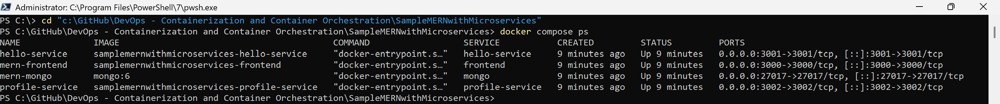
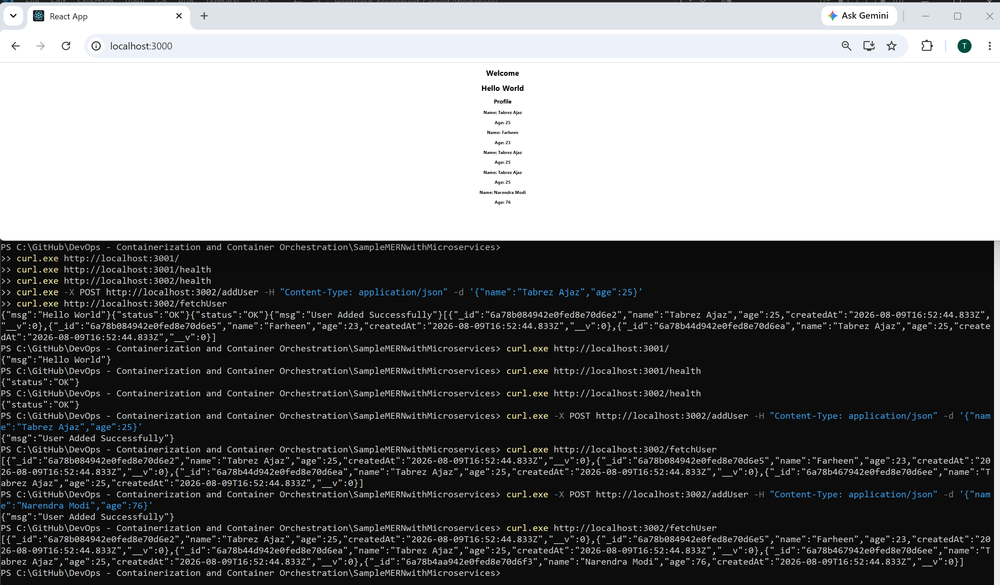
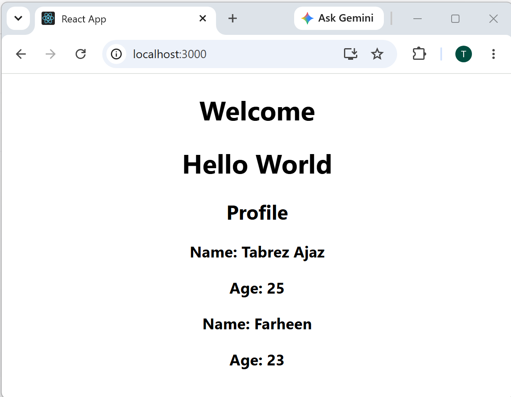
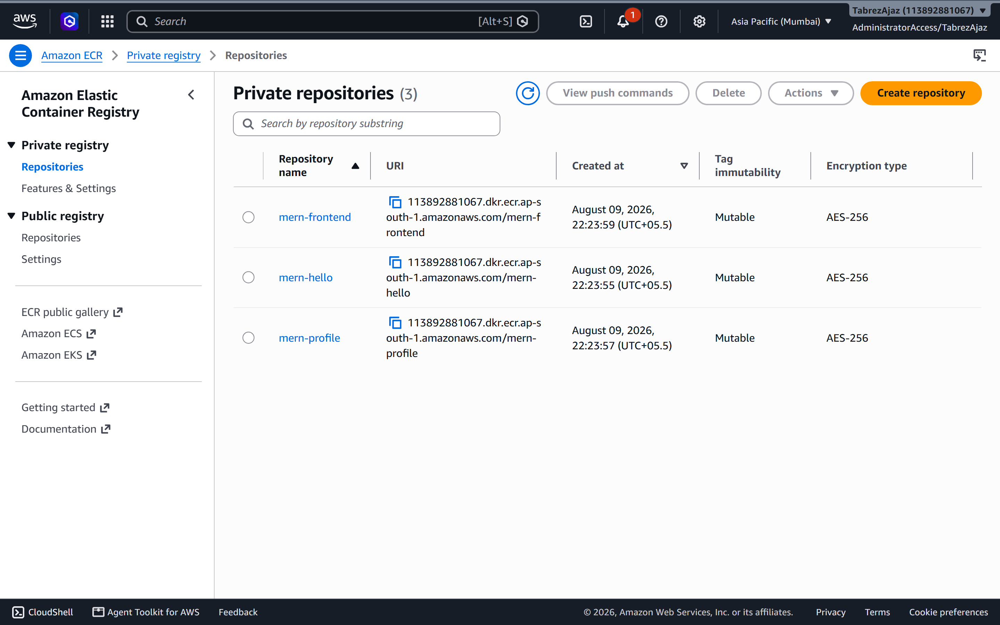

Docker · ECR · Jenkins · EKS · Helm
Graded Project Report
Containerizing a MERN microservices application (helloService, profileService, React frontend), pushing images to Amazon ECR, wiring CI with Jenkins, and deploying to Kubernetes (EKS) with a Helm chart that includes horizontal pod autoscaling.
MERN · Kubernetes · Helm · Orchestration Report · 2026
Take a MERN microservices application, containerize every service, publish the images to a private Amazon ECR registry, build a CI pipeline in Jenkins, and deploy the whole system to a managed Kubernetes cluster (Amazon EKS) using a Helm chart with autoscaling.
| Service | Port | Tech | Endpoints |
|---|---|---|---|
helloService | 3001 | Node/Express | /, /health |
profileService | 3002 | Node/Express + MongoDB | /health, /addUser, /fetchUser |
frontend | 3000 | React (CRA) | Dashboard consuming both backends |
mongo | 27017 | MongoDB 6 | Datastore for profileService |
| Concern | Tool |
|---|---|
| Containerization | Docker, Docker Compose |
| Image registry | Amazon ECR |
| CI | Jenkins (declarative pipeline) |
| Orchestration | Amazon EKS (Kubernetes) |
| Packaging & deploy | Helm chart + HPA autoscaling |
| Region | ap-south-1 (Mumbai) |
Developer ──git push──▶ GitHub (fork)
│
▼
Jenkins CI
┌───────── build 3 images ─────────┐
▼ ▼
docker build aws ecr get-login-password | docker login
│ │
▼ ▼
Amazon ECR ◀── docker push ── mern-hello / mern-profile / mern-frontend
│
▼ helm upgrade --install
Amazon EKS (Kubernetes)
┌───────────────┬─────────────────┬────────────────┐
│ frontend (LB) │ hello (ClusterIP)│ profile(ClusterIP)
│ :3000 │ :3001 │ :3002
└───────────────┴─────────────────┴──────┬─────────┘
▼
MongoDB (in-cluster / Atlas)
+ HorizontalPodAutoscaler on hello & profile (CPU 70%, 2→5 pods)HorizontalPodAutoscaler for the
backend services (min 2, max 5 replicas, target 70% CPU), satisfying the project's scaling requirement.The upstream repository was forked into the author's GitHub account and cloned locally. The fork is
kept in sync with upstream via a second upstream remote.
# Fork: github.com/TabrezAjaz/SampleMERNwithMicroservices
git clone https://github.com/TabrezAjaz/SampleMERNwithMicroservices.git
git remote add upstream https://github.com/UnpredictablePrashant/SampleMERNwithMicroservices.git
# Sync when upstream changes:
git fetch upstream && git merge upstream/mainFROM node:18-alpine
WORKDIR /app
COPY package*.json ./
RUN npm install --production
COPY . .
EXPOSE 3001 # 3002 for profileService
CMD ["node", "index.js"]FROM node:18-alpine AS build
WORKDIR /app
COPY package*.json ./
RUN npm install
COPY . .
ENV DISABLE_ESLINT_PLUGIN=true
ENV CI=false
RUN npm run build
FROM node:18-alpine
WORKDIR /app
RUN npm install -g serve
COPY --from=build /app/build ./build
EXPOSE 3000
CMD ["serve", "-s", "build", "-l", "3000"]services:
mongo: { image: mongo:6, ports: ["27017:27017"] }
hello-service: { build: ./backend/helloService, ports: ["3001:3001"], environment: [PORT=3001] }
profile-service: { build: ./backend/profileService, ports: ["3002:3002"],
environment: [PORT=3002, MONGO_URL=mongodb://mongo:27017/profileDB] }
frontend: { build: ./frontend, ports: ["3000:3000"] }docker compose up --build -d
docker compose ps
docker compose ps).$ curl http://localhost:3001/ -> {"msg":"Hello World"}
$ curl http://localhost:3001/health -> {"status":"OK"}
$ curl http://localhost:3002/health -> {"status":"OK"}
$ curl -X POST http://localhost:3002/addUser -d '{"name":"Tabrez Ajaz","age":25}'
-> {"msg":"User Added Successfully"}
$ curl http://localhost:3002/fetchUser
[{"_id":"...","name":"Tabrez Ajaz","age":25,"createdAt":"2026-08-09T..."},
{"_id":"...","name":"Farheen","age":23,"createdAt":"2026-08-09T..."}]

http://localhost:3000.AWS CLI was configured with an IAM Identity Center (SSO) profile, then the three images were built and pushed to Amazon ECR. Repositories are created on demand.
# Verify identity
aws sts get-caller-identity # Account 113892881067, ap-south-1
# Create repos, log in, build & push (scripts/build-and-push-ecr.ps1)
aws ecr create-repository --repository-name mern-hello --region ap-south-1
aws ecr create-repository --repository-name mern-profile --region ap-south-1
aws ecr create-repository --repository-name mern-frontend --region ap-south-1
aws ecr get-login-password --region ap-south-1 \
| docker login --username AWS --password-stdin 113892881067.dkr.ecr.ap-south-1.amazonaws.com
docker build -t 113892881067.dkr.ecr.ap-south-1.amazonaws.com/mern-hello:latest ./backend/helloService
docker build -t 113892881067.dkr.ecr.ap-south-1.amazonaws.com/mern-profile:latest ./backend/profileService
docker build -t 113892881067.dkr.ecr.ap-south-1.amazonaws.com/mern-frontend:latest ./frontend
docker push 113892881067.dkr.ecr.ap-south-1.amazonaws.com/mern-hello:latest
docker push 113892881067.dkr.ecr.ap-south-1.amazonaws.com/mern-profile:latest
docker push 113892881067.dkr.ecr.ap-south-1.amazonaws.com/mern-frontend:latest
mern-hello, mern-profile, mern-frontend).A root Jenkinsfile defines the CI/CD pipeline. It builds the three images, logs in and
pushes them to ECR, then deploys to EKS with Helm.
pipeline {
agent any
environment {
AWS_REGION = 'ap-south-1'
ECR_REGISTRY = "${AWS_ACCOUNT_ID}.dkr.ecr.${AWS_REGION}.amazonaws.com"
IMAGE_TAG = "${env.BUILD_NUMBER}"
CLUSTER_NAME = 'mern-eks'
}
stages {
stage('Checkout') { steps { checkout scm } }
stage('Build Images') { steps { sh 'docker build ... (hello, profile, frontend)' } }
stage('Login to ECR') { steps { sh 'aws ecr get-login-password | docker login ...' } }
stage('Push Images') { steps { sh 'docker push ... (x3)' } }
stage('Deploy to EKS (Helm)') {
steps {
sh '''
aws eks update-kubeconfig --name $CLUSTER_NAME --region $AWS_REGION
helm upgrade --install mern ./helm/mern-app \
--set imageRegistry=$ECR_REGISTRY --set tag=$IMAGE_TAG --wait
'''
}
}
}
}credentialsId: 'aws-credentials'); the account id is a Jenkins environment value. No secrets are hard-coded.eksctl create cluster \
--name mern-eks --region ap-south-1 \
--nodegroup-name mern-nodes --node-type t3.small \
--nodes 2 --nodes-min 2 --nodes-max 4 --managed
aws eks update-kubeconfig --name mern-eks --region ap-south-1
kubectl get nodeshelm/mern-app/
├── Chart.yaml
├── values.yaml # imageRegistry, tag, replicas, autoscaling, mongo.url
└── templates/
├── mongo.yaml # in-cluster MongoDB (toggle mongo.inCluster)
├── hello-service.yaml # Deployment + Service (ClusterIP) + HPA
├── profile-service.yaml # Deployment + Service + Secret(MONGO_URL) + HPA
└── frontend.yaml # Deployment + Service (LoadBalancer)helm upgrade --install mern ./helm/mern-app \
--set imageRegistry=113892881067.dkr.ecr.ap-south-1.amazonaws.com \
--set tag=latest
kubectl get pods
kubectl get svc # frontend EXTERNAL-IP = LoadBalancer URL
kubectl get hpa # autoscalers for hello & profile--set mongo.inCluster=false --set mongo.url='<atlas-connection-string>' so the value is
injected at deploy time and never committed to Git.minReplicas: 2 maxReplicas: 5 targetCPUUtilizationPercentage: 70helm repo add prometheus-community https://prometheus-community.github.io/helm-charts
helm repo update
helm install monitoring prometheus-community/kube-prometheus-stack \
--namespace monitoring --create-namespace
kubectl -n monitoring get pods
kubectl -n monitoring port-forward svc/monitoring-grafana 3000:80 # Grafana dashboardsaws eks update-kubeconfig --name mern-eks --region ap-south-1
# Deploy the CloudWatch agent + Fluent Bit daemonset (Container Insights):
ClusterName=mern-eks; RegionName=ap-south-1; FluentBitHttpPort='2020'
kubectl apply -f https://raw.githubusercontent.com/aws-samples/amazon-cloudwatch-container-insights/latest/k8s-deployment-manifest-templates/deployment-mode/daemonset/container-insights-monitoring/quickstart/cwagent-fluent-bit-quickstart.yaml/aws/containerinsights/mern-eks/* for centralized logging.| Symptom | Cause | Fix |
|---|---|---|
Docker engine unresponsive (docker info hangs) | WSL2 backend stuck on start | Stop Docker, wsl --shutdown, relaunch Docker Desktop. |
Bind for 0.0.0.0:3001 failed: port is already allocated | Old containers from a previous project held 3000-3002 | Removed the stale containers, then docker compose up -d --force-recreate. |
| Host ports not published after a failed first run | Compose reused half-created containers | docker compose down then recreate. |
SyntaxError: Unexpected token \ in JSON on /addUser | PowerShell mangled the escaped JSON body | Use single quotes: -d '{"name":"..","age":25}' (no backslashes). |
Frontend calls localhost:3001/3002 | Backend URLs are hard-coded in the sample app | Works locally (browser → host). On EKS, expose via ingress or rebuild with env-based URLs. |
The MERN microservices application was containerized, verified end-to-end locally with Docker Compose (including a MongoDB write/read), and its three images were published to Amazon ECR. A Jenkins pipeline and a Helm chart (with autoscaling) provide the CI and Kubernetes deployment path to Amazon EKS, with Prometheus/ Grafana and CloudWatch Container Insights for monitoring and logging.
eksctl delete cluster --name mern-eks --region ap-south-1.